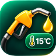
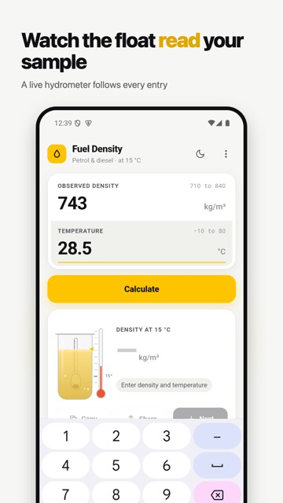
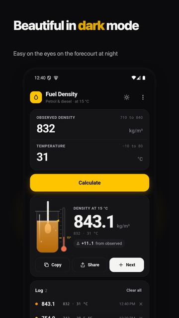

Wiz Fuel Density: 15°C डेंसिटी कैलकुलेटर
हाइड्रोमीटर पर पढ़ी गई डेंसिटी और सैंपल का तापमान लिखें, और छपे हुए डेंसिटी चार्ट में ढूँढे बिना 15°C की डेंसिटी पाएँ। पेट्रोल पंप डीलर, मैनेजर और स्टाफ़ के लिए, और डिपो, लैब और ट्रांसपोर्ट स्टाफ़ के लिए।
Google Play पर पाएँ Read in English


ऐप क्या करता है
- 15°C पर डेंसिटी: observed density (710 से 840 kg/m³) और तापमान (−10 से 80°C) से।
- ASTM D1250 Table 53B पर आधारित, पेट्रोल (MS) और डीज़ल (HSD) के लिए।
- observed से कितना बदला, यह दिखता है। मूल टेबल में extrapolated वैल्यू पर निशान लगता है।
- तेज़ एंट्री: 3 अंक की डेंसिटी के बाद कर्सर तापमान पर। Next अगले सैंपल के लिए तापमान रखता है।
- पिछली 50 गणनाएँ फ़ोन में। रीडिंग कॉपी करें या WhatsApp और डेंसिटी रजिस्टर के लिए शेयर करें।
- बिना इंटरनेट चलता है। कोई अकाउंट या लॉगिन नहीं।
सवाल
15°C पर डेंसिटी कैसे निकालें?
हाइड्रोमीटर पर पढ़ी डेंसिटी लिखें, फिर सैंपल का तापमान, और Calculate दबाएँ। ऐप अंदर की टेबल से 15°C डेंसिटी दिखाता है, और observed से कितना बदला, यह भी।
कितनी डेंसिटी और तापमान तक चलता है?
observed density 710 से 840 kg/m³ और तापमान −10 से 80°C तक। इसमें पेट्रोल और डीज़ल दोनों आते हैं।
कौन-सी टेबल इस्तेमाल होती है?
ASTM D1250 Table 53B। आधिकारिक रिकॉर्ड में लिखने से पहले अपनी स्वीकृत टेबल से मिलान ज़रूर करें।
क्या यह बिना इंटरनेट चलता है?
हाँ। पूरी टेबल ऐप के अंदर है, और कैलकुलेटर पेज इंटरनेट का इस्तेमाल कर ही नहीं सकता।
Wiz Labs के दूसरे ऐप
- Wiz Dip Charts: टैंक डिप चार्ट, डिप (cm) से लीटर।
- Wiz Mock GPS: ऐप टेस्टिंग के लिए mock location।